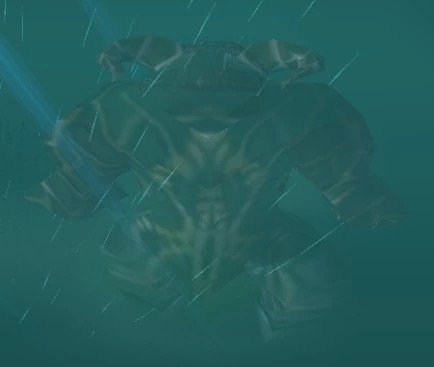

Give all your drones to Melee heros. They need it against Spirit Storm.
Use W just before Spirit Beast reach 40% to avoid initial 1s stun from Spirit Storm.
Use R as first spell of fight, using it on Spirit Storm is a waste since Debuff wont apply.
If you can, save your F for Spirit Storm, its safe way of Finishing things up and it cleans summoned Fairies and Driads easily.
If you have Drone on yourself or any item granting you shield and or resistance, try to use your T for Spirit Storm since you wont get stunned by it.
(Funny Tip) If you want to solo/duo spirit beast with shooter, start shooting spirit beast with E from up the hill, if your E aggro two fairies, wait a bit and clean them with T, since T have lower chance to get aggro of Spirit Beast.
You can also clean these two fairies with F.